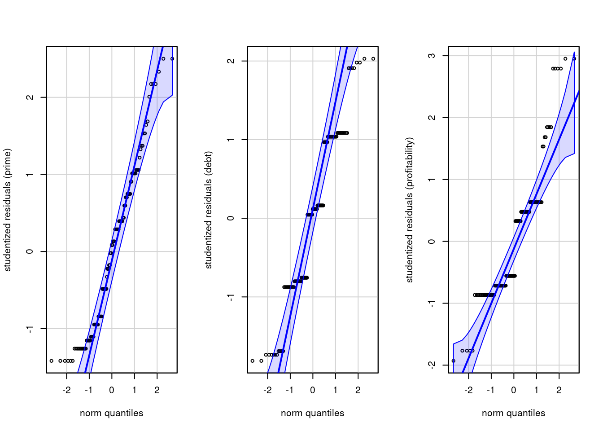

The data presented in this example vignette is inspired by a study from Anandarajan et al. (2002), who looked at the impact of communication means through different disclosure format on the perceived risk of organization on the brink of bankruptcy in accountancy. There is a single between-subject factor for the disclore format, and three measures of the performance, ratings for the interest rate premium assessed, for the ability to service debt and that to improve profitability.
Data
We first load the data from the package and inspect the content.
The data are unbalanced by condition. In general, we need them to be roughly balanced. The manova function will not be usable and we need to enforce sum-to-zero constraints to get sensible outputs, otherwise answers will be off.
Model fitting
After having done so, we can fit the multivariate linear model with lm by binding columns on the left of the ~ sign to gather the response vectors.
Code
options(contrasts =c("contr.sum", "contr.poly"))model <-lm(cbind(prime, debt, profitability) ~ format, data = AVC02)
We can check the residual correlation matrix to see if there was a strong dependence between our measurements. The benefit of MANOVA is to be able to leverage this correlation, if any.
Code
cor(resid(model))
prime debt profitability
prime 1.00 -0.40 -0.54
debt -0.40 1.00 0.65
profitability -0.54 0.65 1.00
We can look at the global mean for each variable and the estimated mean differences for all groups, including the reference which is omitted. It’s easy to see that the mean differences sum to zero.
Code
dummy.coef(model)
Full coefficients are
(Intercept): prime 1.280511
debt 2.881521
profitability 2.597695
format: integrated note stand-alone note
prime -0.099261229 -0.013844563
debt 0.068479117 -0.059298660
profitability 0.127304965 0.002304965
(Intercept):
format: modified auditor report
0.113105792
-0.009180457
-0.129609929
Multivariate analysis of variance
Next, we compute the multivariate analysis of variance table and the follow-up with the univariate functions. By default, we can add a multiplicity correction for the tests, using Holm-Bonferonni with option 'holm'. For the MANOVA test, there are multiple statistics to pick from, including Pillai, Wilks, Hotelling-Lawley and Roy. The default is Pillai, which is more robust to departures from the model hypothesis, but Wilks is also popular choice among practitioners.
Code
car::Manova(model, test ="Pillai")
Type II MANOVA Tests: Pillai test statistic
Df test stat approx F num Df den Df Pr(>F)
format 2 0.02581 0.55782 6 256 0.7637
Effect sizes
We can compute effect sizes overall for the MANOVA statistic using the correspondance with the \(F\) distribution, and also the individual effect size variable per variable. Here, the values returned are partial \(\widehat{\eta}^2\) measures.
Code
effectsize::eta_squared(car::Manova(model))
# Effect Size for ANOVA (Type II)
Parameter | Eta2 (partial) | 95% CI
-----------------------------------------
format | 0.01 | [0.00, 1.00]
- One-sided CIs: upper bound fixed at [1.00].
Code
# Since it's a one-way between-subject MANOVA, no partial measureeffectsize::eta_squared(model, partial =FALSE)
# Effect Size for ANOVA (Type I)
Response | Parameter | Eta2 | 95% CI
---------------------------------------------------
prime | format | 0.01 | [0.00, 1.00]
debt | format | 2.23e-03 | [0.00, 1.00]
profitability | format | 0.02 | [0.00, 1.00]
Post-hoc analyses
We can continue with descriptive discriminant analysis for the post-hoc comparisons. To fit the model using the lda function from the MASS package, we swap the role of the experimental factor and responses in the formula. The output shows the weights for the linear combinations.
Code
MASS::lda(format ~ prime + debt + profitability,data = AVC02)
Call:
lda(format ~ prime + debt + profitability, data = AVC02)
Prior probabilities of groups:
integrated note stand-alone note modified auditor report
0.3030303 0.3409091 0.3560606
Group means:
prime debt profitability
integrated note 1.181250 2.950000 2.725000
stand-alone note 1.266667 2.822222 2.600000
modified auditor report 1.393617 2.872340 2.468085
Coefficients of linear discriminants:
LD1 LD2
prime 0.5171202 0.16521149
debt 0.6529450 0.97286350
profitability -1.2016530 -0.04412713
Proportion of trace:
LD1 LD2
0.9257 0.0743
Interpretation of these is beyond the scope of the course, but you can find information about linear discriminant analysis in good textbooks (TODO add reference).
Model assumptions
The next step before writing about any of our conclusions is to check the model assumptions. As before, we could check for each variable in turn whether the variance are the same in each group. Here, we rather check equality of covariance matrix. The test has typically limited power, but unfortunately is very sensitive to departure from the multivariate normality assumption, so sometimes rejection are false positive.
Here, there is a smallish \(p\)-value, so weak evidence against equality of covariance matrices. The data were generated from normal distribution, but the small \(p\)-value is an artifact of the rounding of the Likert scale.
We can test the normality assumption using univariate quantile-quantile plots or tests of normality, including Shapiro-Wilks.
Code
par(mfrow =c(1,3)) # one row, 3 columns for plot layoutcar::qqPlot(rstudent(model)[,1], id =FALSE, # don't flag outliersylab ="studentized residuals (prime)")car::qqPlot(rstudent(model)[,2], id =FALSE, ylab ="studentized residuals (debt)")car::qqPlot(rstudent(model)[,3], id =FALSE, ylab ="studentized residuals (profitability)")

We see severe rounding impacts for debt and profitability. There is little to be done about this, but the sample size are large enough that this shouldn’t be too much a concern.
We can also test the multivariate normality assumption. The latter supposes that observations in each group have the same mean. To get this, we detrend using multivariate linear model by subtracting the mean of each group. Thus, our input is the matrix of residuals, which must be transposed for the function to be happy.
Code
mvnormtest::mshapiro.test(U =t(resid(model)))
Shapiro-Wilk normality test
data: Z
W = 0.96982, p-value = 0.004899
There is (unsurprisingly) strong evidence against multivariate normality, but it matters less due to sample size. This is a consequence of the discrete univariate measurements, which explain rejection of the null (for data to be multivariate normal, each of the response must be univariate normal and the dependence structure must also match.
Since assumptions are doubtful, we recommend using Pilai’s trace as test statistic for the MANOVA.
References
Anandarajan, A., Viger, C., & Curatola, A. P. (2002). An experimental investigation of alternative going-concern reporting formats: A Canadian experience. Canadian Accounting Perspectives, 1(2), 141–162. https://doi.org/10.1506/5947-NQTC-C3Y5-H46N
Source Code
---title: "Multivariate analysis of variance"type: docseditor_options: chunk_output_type: console---The data presented in this example vignette is inspired by a study from @Anandarajan:2002, who looked at the impact of communication means through different disclosure format on the perceived risk of organization on the brink of bankruptcy in accountancy. There is a single between-subject factor for the disclore format, and three measures of the performance, ratings for the interest rate premium assessed, for the ability to service debt and that to improve profitability.## Data We first load the data from the package and inspect the content.```{r}data(AVC02, package ="hecedsm")str(AVC02)xtabs(~ format, data = AVC02)```The data are unbalanced by condition. In general, we need them to be roughly balanced. The `manova` function will not be usable and we need to enforce sum-to-zero constraints to get sensible outputs, otherwise answers will be off.## Model fittingAfter having done so, we can fit the multivariate linear model with `lm` by binding columns on the left of the `~` sign to gather the response vectors.```{r}options(contrasts =c("contr.sum", "contr.poly"))model <-lm(cbind(prime, debt, profitability) ~ format, data = AVC02)```We can check the residual correlation matrix to see if there was a strong dependence between our measurements. The benefit of MANOVA is to be able to leverage this correlation, if any.```{r}#| eval: false#| echo: truecor(resid(model))``````{r}#| eval: true#| echo: falseround(cor(resid(model)), 2)```We can look at the global mean for each variable and the estimated mean differences for all groups, including the reference which is omitted. It's easy to see that the mean differences sum to zero.```{r}dummy.coef(model)```## Multivariate analysis of varianceNext, we compute the multivariate analysis of variance table and the follow-up with the univariate functions. By default, we can add a multiplicity correction for the tests, using Holm-Bonferonni with option `'holm'`. For the MANOVA test, there are multiple statistics to pick from, including `Pillai`, `Wilks`, `Hotelling-Lawley` and `Roy`. The default is `Pillai`, which is more robust to departures from the model hypothesis, but `Wilks` is also popular choice among practitioners.```{r}car::Manova(model, test ="Pillai")```## Effect sizesWe can compute effect sizes overall for the MANOVA statistic using the correspondance with the $F$ distribution, and also the individual effect size variable per variable. Here, the values returned are partial $\widehat{\eta}^2$ measures.```{r}effectsize::eta_squared(car::Manova(model))# Since it's a one-way between-subject MANOVA, no partial measureeffectsize::eta_squared(model, partial =FALSE)```## Post-hoc analysesWe can continue with descriptive discriminant analysis for the post-hoc comparisons. To fit the model using the `lda` function from the `MASS` package, we swap the role of the experimental factor and responses in the formula. The output shows the weights for the linear combinations.```{r}MASS::lda(format ~ prime + debt + profitability,data = AVC02)```Interpretation of these is beyond the scope of the course, but you can find information about linear discriminant analysis in good textbooks (TODO add reference).## Model assumptionsThe next step before writing about any of our conclusions is to check the model assumptions. As before, we could check for each variable in turn whether the variance are the same in each group. Here, we rather check equality of covariance matrix. The test has typically limited power, but unfortunately is very sensitive to departure from the multivariate normality assumption, so sometimes rejection are false positive.```{r}with(AVC02,biotools::boxM(cbind(prime, debt, profitability),grouping = format))```Here, there is a smallish $p$-value, so weak evidence against equality of covariance matrices. The data were generated from normal distribution, but the small $p$-value is an artifact of the rounding of the Likert scale.We can test the normality assumption using univariate quantile-quantile plots or tests of normality, including Shapiro-Wilks.```{r}par(mfrow =c(1,3)) # one row, 3 columns for plot layoutcar::qqPlot(rstudent(model)[,1], id =FALSE, # don't flag outliersylab ="studentized residuals (prime)")car::qqPlot(rstudent(model)[,2], id =FALSE, ylab ="studentized residuals (debt)")car::qqPlot(rstudent(model)[,3], id =FALSE, ylab ="studentized residuals (profitability)")```We see severe rounding impacts for debt and profitability. There is little to be done about this, but the sample size are large enough that this shouldn't be too much a concern.We can also test the multivariate normality assumption. The latter supposes that observations in each group have the same mean. To get this, we detrend using multivariate linear model by subtracting the mean of each group. Thus, our input is the matrix of residuals, which must be transposed for the function to be happy.```{r}mvnormtest::mshapiro.test(U =t(resid(model)))```There is (unsurprisingly) strong evidence against multivariate normality, but it matters less due to sample size. This is a consequence of the discrete univariate measurements, which explain rejection of the null (for data to be multivariate normal, each of the response must be univariate normal and the dependence structure must also match.Since assumptions are doubtful, we recommend using Pilai's trace as test statistic for the MANOVA.